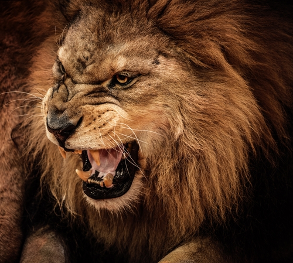

the lion
The lion is a species in the Felidae family and a member of the genus Panthera. It has been listed as Vulnerable on the IUCN Red List since 1996, as populations in African range countries declined by about 43% since the early 1990s.
- Scientific name: Panthera leo
- Life Span: 10 - 14years
- Speed: 50 mph #3
- Conservation status: Vulnurable
African lions are the most social of all big cats and live together in groups or “prides.” A pride consists of about 15 lions. ... Male lions defend the pride's territory while females do most of the hunting. Despite this, the males eat first